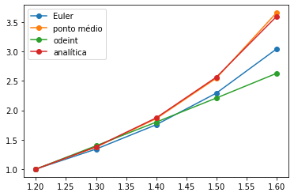

Lista de Exercícios 6
Contents
Lista de Exercícios 6#
Solucionário matemático e computacional de exercícios selecionados da Lista de Exercícios 6.
%matplotlib inline
import numpy as np
import matplotlib.pyplot as plt
from scipy.integrate import odeint
Funções-base para resolucão#
"""
Implementação do método de Euler
'expr' deve conter variáveis 't' e 'y'.
Para casos em que são 0, fazer '0*t'
ou '0*y'.
"""
def met_euler(expr,n,a,b,y0,mov):
# expressão
f = eval('lambda t,y:' + expr)
# malha
t = np.linspace(a,b,num=n,endpoint=True)
# passo
h = (b-a)/(n-1)
print('Tamanho do passo: h = {0}'.format(h))
# y(t)
y = 0*t
# resolve para frente
if mov is 'front':
# cond. inicial
y[0] = y0
# esquema
for i in range(0,n-1):
y[i+1] = y[i] + h*f(t[i],y[i])
return t,y
# resolve para trás
elif mov is 'back':
# cond. inicial
y[-1] = y0
# esquema
for i in range(n-1,0,-1):
y[i-1] = y[i] - h*f(t[i],y[i])
return t,y
def met_pt_medio(expr,n,a,b,y0):
# expressão
f = eval('lambda t,y:' + expr)
# malha
t = np.linspace(a,b,num=n,endpoint=True)
# passo
h = (b-a)/(n-1)
print('Tamanho do passo: h = {0}'.format(h))
# y(t)
y = 0*t
# cond. inicial
y[0] = y0
# esquema
for i in range(0,n-1):
tmed = t[i] + h/2
ymed = y[i] + h/2*f(t[i],y[i])
y[i+1] = y[i] + h*f(tmed,ymed)
return t,y
Soluções da Lista 6#
solucao-L6-Q1a#
# PVI
# h = 0.1 => 5 pontos
expr = 'y**2 - t/2 + 3'
# resolve para a frente
y0 = 1
a = 1.2
b = 1.6
n = 5
mov = 'front'
x1,y1 = met_euler(expr,n,a,b,y0,mov)
# resolve para trás
y0 = 1
a = 0.8
b = 1.2
n = 5
mov = 'back'
x2,y2 = met_euler(expr,n,a,b,y0,mov)
# aproximação y(0.8)
print('Aproximação y(0.8) = {0}'.format(y2[0]))
# aproximação y(1.2)
print('Aproximação y(1.6) = {0}'.format(y1[-1]))
# plotagem
plt.plot(x1,y1,'o-',label='frente')
plt.plot(x2,y2,'o-',label='trás')
plt.axvline(x=1.2,color='k',linewidth=0.6,linestyle='--')
plt.axhline(y=1.0,color='k',linewidth=0.6,linestyle='--')
plt.legend()
Tamanho do passo: h = 0.10000000000000003
Tamanho do passo: h = 0.09999999999999998
Aproximação y(0.8) = -0.14851547391331865
Aproximação y(1.6) = 3.042921559591501
<matplotlib.legend.Legend at 0x1518bfbda0>
solucao-L6-Q1b#
# resolve por ponto médio
y0 = 1
a = 1.2
b = 1.6
n = 5
xm,ym = met_pt_medio(expr,n,a,b,y0)
# resolve por função residente
f = eval('lambda t,y:' + expr)
xr = np.linspace(1.2,1.6,num=5,endpoint=True)
yr = odeint(f,1,xr)
yr
Tamanho do passo: h = 0.10000000000000003
array([[1. ],
[1.39644385],
[1.7989217 ],
[2.20909012],
[2.62852487]])
Solução analítica para a EDO do PVI#
# Encontrando a solução por computação simbólica
import sympy as sp
sp.init_printing()
# variável simbólica
tsym = sp.symbols('t')
# função
f = sp.symbols('f', cls=sp.Function)
# EDO
edo = sp.Eq( f(tsym).diff(tsym), f(tsym)**2 - tsym/2 + 3)
# solução
# lembre que: t0 = 1.2; y0 = 1
sol = sp.dsolve(edo,f(tsym),ics={f(1.2):1})
# usa membro direito e remove big-oh
sol = sol.rhs.removeO()
# substitui expressão simbólica por numérica
yt = [sol.subs(tsym,i) for i in xr]
yt = np.asarray(yt)
print("Solução analítica:")
sol
Solução analítica:
Comparação de soluções#
# compara todos os resultados
plt.plot(x1,y1,'o-',label='Euler')
plt.plot(xm,ym,'o-',label='ponto médio')
plt.plot(xr,yr.T[0],'o-',label='odeint')
plt.plot(xr,yt,'o-',label='analítica')
plt.legend();

# variável simbólica
tsym = sp.symbols('t')
# função
f = sp.symbols('f', cls=sp.Function)
# EDO
edo = sp.Eq( f(tsym).diff(tsym) - 4*sp.exp(0.8*tsym) + 0.5*f(tsym),0)
# solução
sol = sp.dsolve(edo,f(tsym),ics={f(0):2})
# usa membro direito e remove big-oh
sol = sol.rhs.removeO()
# substitui expressão simbólica por numérica
yt = [sol.subs(tsym,i) for i in xr]
yt = np.asarray(yt)
print("Solução analítica:")
sol
Solução analítica: